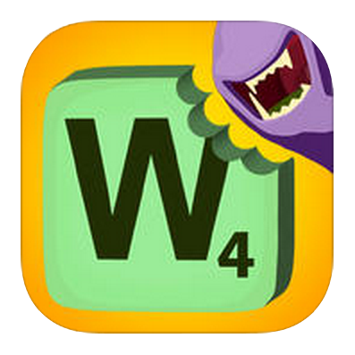
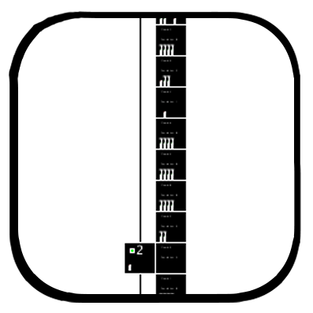

I'm a 2nd year at Hampshire College, concentrating in Computer Science, Game Development, and Visual Media. Expected date of graduation: May 2017
Featured Projects:
Word Snack: Gameplay Programmer
Word Snack was an interdisciplinary course of 32 students and two professors working in small teams on each aspect of development during the Fall '14 semester. I was a member of the 11 person programming team, working collaboratively through GitHub to code the game, using the Unity 3D engine.
The final product is a word game featuring multiple modes and animated characters. I worked on coding a variety of elements, from the scoring, to the gameplay, and the GUI.

Apartments: Programmer and Designer
I created and programmed Apartments for my Digital Art course during the Fall '14 semester. I designed the concept and programmed the game in Processing. I worked on the project over the course of several weeks, and presented it is my final project for the course.
It features a scroll- and zoom-able game world, basic AI, and GUI to world interaction.
- Click to Download
- View on GitHub
Hatter: Programmer and Designer
I created and programmed Hatter in my Web Development class during the Spring '14 semester. Hatter is made with the Phaser library and coded in Javascript. I created all the sprites featured within the game, wrote the code, and built the accompanying website over the latter half of the semester as my final project for the course.
Hatter features a 2D game world, with enemy AI, multiple weapons, and original 2D sprite animation.

Links and Downloads
Programs and Environments
- Unity 3D
- Processing
- Phaser
- Photoshop
- SquareSpace
- GitHub
Languages
- Clojure
- C#
- Java
- Javascript
- jQuery
- R
- Ruby
- Ruby on Rails
- Python
Related Coursework
Click course name for more info
- Introduction to Game Programming
- Web Development I
- Digital Art
- Interdisciplinary Game Studio
- Artificial Intelligence
- Computer Systems I
- Introduction to Discrete Mathematics
- Database Driven Websites
- Introduction to Computer Science II
- Programming with Data Structures
Professor: Ira Fay
Semester: Fall 2013
Narrative Evaluation:
Attendance: Isaiah Mann attended all 21 class sessions and was never late.
Individual Projects: There were two 3-week individual projects. The first introduced variables, comments, and conditionals, and familiarized students with Unity in general. The second assignment build on previous concepts and added loops, methods, and object oriented programming (OOP) concepts. Team Projects: There were two 4-week team projects, in teams of two. Both involved making playable games from game design documents, reinforced previous concepts in the class, and offered opportunities to develop communication and teamwork skills.
Additional Thoughts: Isaiah completed the individual projects very well. On the team projects, he worked well with his teammates and was one of the few students in the class to complete the final project (with added complexity of his own choosing). I believe Isaiah has a lot of potential, and I look forward to seeing future work in this and related fields. In future semesters, if Isaiah would like to be a TA for this course, I would be favorably inclined.
Professor: Zeke Nerienberg
Semester: Spring 2014
Narrative Evaluation:
Isaiah Mann was an excellent student in this course. He started the semester with some prior programming experience which made it easier for him to grasp concepts, but was new to web development. He graciously agreed to act almost like a TA when he had learned a subject. He mastered three skill areas. Isaiah has demonstrated mastery of HTML. He can now create well-formatted web-based content and understand other people's code. Isaiah understands web standards and knows where to look for help. He has a good understanding of how the internet works. I am impressed with his performance in this area. Isaiah readily learned CSS, the framework used to define the aesthetic properties of websites. Not only did Isaiah demonstrate the ability to make his websites look the way he wanted them to, he wrote code that was clean and organized. Isaiah was able to make web content come to life using javascript. Isaiah wrote code that was clean, readable, and performant. He showed a solid understanding of programming principles that go far beyond web development.
For his final project, Isaiah built a complete game using Phaser, a 2D HTML5 game framework. The game features a woman known as the 'hatter' who seeks to overthrow a warlord in a dystopian future. Primarily a 2D shooter, the game uses mechanical like ammo, life pick-ups, and enemies with basic artificial intelligence. In addition to the game, Isaiah also employed publicly accessible concept art, wrote a backstory, and made animated screenshots. This is a complete project which Isaiah should be proud of. He should continue to develop it and other projects. Good job!
Professor: John Slepian
Semester: Fall 2014
Narrative Evaluation:
Isaiah was an excellent student who produced very strong work. He was an active participant in discussions and critiques. Isaiah had by far the strongest programming skills in the class and he took the time to help his classmates. Even though a lot of his work had to be self-directed, due to the size of the class and his advanced programming level, he really pushed himself.
Isaiah's self-portrait collage was funny, well composed, and well executed. It consisted of a photo of himself staring at himself on a computer screen. The most striking aspect was the way that Isaiah superimposed a brain image on his onscreen self, so that it weirdly looked like it was coming out of his head. Isaiah's sound piece was also successful. It was a collage of individual words from different speakers reading the beginning of the “Gettysburg Address.” I twas a funny and smart idea that was well executed. But it was in the interactive work that Isaiah really stood out. Both of his pieces were visually elegant 2D graphical games. His first was a mining game in which the viewer navigated a drill through a field of squares to mine “gold.” Every detail of how the game worked, from the rotating of the drill to the disappearing of the squares as they were “drilled” was well conceived—abstract but satisfying. Isaiah's final piece was more elaborate and more open ended. In it, the user navigated up and down a highly abstracted “building,” really just a vertical line of squares, with an elevator, moving little figures to different floors. The objective was to make them “happy,” represented by color, by pairing them up evenly. Again, every detail of the highly abstracted world was well chosen and represented, and added up to a compelling interactive experience.
Isaiah is clearly a very talented programmer and game designer, with a knack for creating visually simple but conceptually complex experiences. It will be really interesting to see how his work develops. He was a pleasure to have in the class.
Professors: Ira Fay, Chris Perry
Semester: Fall 2014
Narrative Evaluation:
Isaiah was a member of the programming team, which was tasked with creating the underlying code of the game. Programmers would read the documents provided by the game design team and implement those ideas in code, specifically using C# in the Unity game engine and GitHub for source control. Programmers also needed to integrate assets provided by the art and audio teams into the game. Near the beginning of the project, the programmers created a technical design document to guide implementation, and throughout the course they coordinated with each other to allow all the pieces of code to function together.
Isaiah had perfect attendance this term and was an active participant in class meetings and on the group email lists. Isaiah's primary responsibilities within the programming team were related to gameplay, plus additional support where possible. Isaiah's teammates spoke highly of his contributions related to gameplay implementations, his prolific involvement particularly at the beginning of the course, his willingness to help out wherever needed, his reliability regarding deadlines, and the ease of collaborating with him. They also felt that Isaiah could have been a little less involved at the beginning, leaving more work for this teammates, which Isaiah also reflected in his self evaluation. There was widespread agreement that Isaiah was able to strike the right balance by the end of the course. We look forward to seeing Isaiah's future work in this field if he chooses to pursuit it. If this class (or something similar) is offered again, we would welcome Isaiah's participation in a leadership role.
Professor: Lee Spector
Semester: Fall 2014
Narrative Evaluation:
The objectives of this course were for students to gain familiarity with concepts and computational techniques developed by AI researchers and to apply several of these techniques to hands-on research and development activities involving "intelligent agents" in virtual worlds. Beyond attendance, completion of assigned readings, and class participation, each student was expected to present regular demonstrations of running code, to build and submit a portfolio of code at the end of the semester, and to write a retrospective essay discussing the portfolio and the way that it relates to the AI concepts covered in class.
Isaiah's performance in this course was excellent. He attended regularly, participated enthusiastically, and was engaged with the course materials. He was always well prepared for in-class demonstrations, and his work showed continuous improvement and thoughtful experimentation with many of the concepts addressed in course readings and class discussions. I was particularly impressed with the wide range of his work (which addressed several different problems, using several different AI techniques), with his ability to work either alone or collaboratively, and with the creativity that he demonstrated and the results that he achieved in his final project (which involved wars among different groups of agents in a 2D virtual world). Isaiah's portfolio was well organized, and his retrospective essay did a good job of describing his projects and the ideas behind them. Overall, I think that Isaiah learned a great deal in this course.
Professor: Scott Kaplan
Semester: Fall 2014
Grade: A-
Professor: Gwen Spencer
Semester: Fall 2014
Grade: A-
Semester: Spring 2015
Professor: Jaime Davila
Professor: John Rager
Semester: Spring 2015
Professor: Eitan Mendelowitz
Semester: Spring 2015